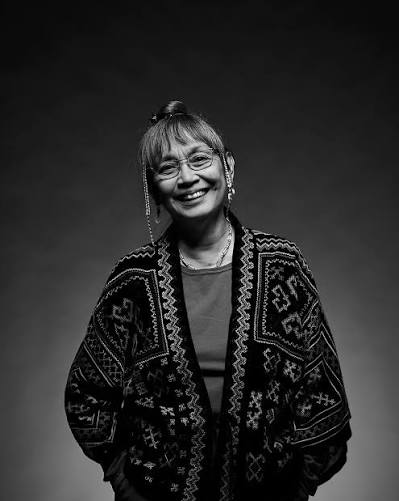
Born November 21, 1949
San Juan, Rizal
Carcass-Cornucopia, 1987
Cold-cast marble, unhulled rice, metal hooks, abaca rope
182.8 x 130 x 80 cm
Through this image we see a sculpture of a woman dangling upside down with her stomach torn open and a baby poking out as well as other substances that are on the ground. The representation we see is how women in the Philippines are seen as the caretaker and have high expectations through society’s eyes. The sculpture symbolizes the state of birth, motherhood, sacrifices, and morality. Despite the grotesque piece, there is a sense of tragic beauty that a woman, especially a mother might feel when wanting the best for their baby.
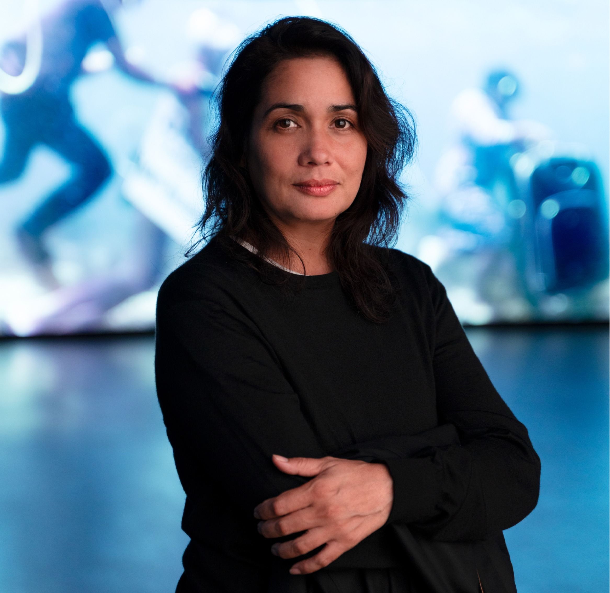
Born 1981
Manila, Philippines
The Coconut Tree Methodology No. 1
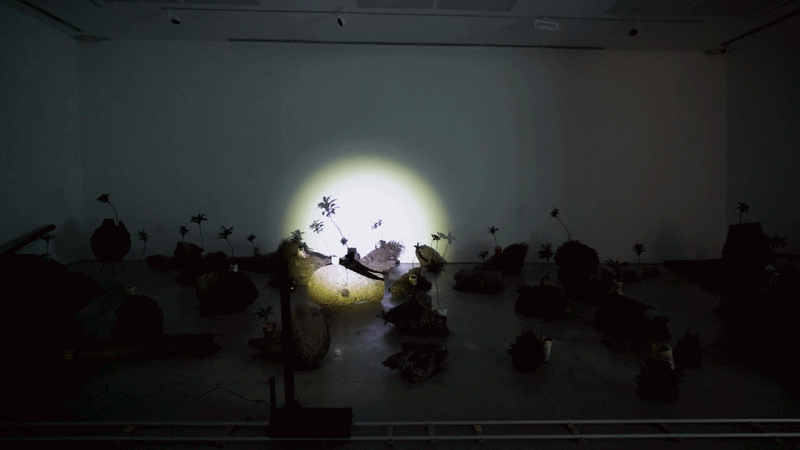
Installation
x39 coconuts, x27 Ti plants, x6 bamboo sound machines with water batad shells, slider light machine
In this extravagant work it is to show an archipelago called Bantayan which is Atienza’s home. The installation is through collaboration with her fellow community to spread awareness of the harsh climate changes and the lack of government help that is being funded. Time has always been one of the greatest components for nature and how it can tell the change of season or weather. Coconut trees are evidence that are shaped by environmental degradation by political and economic will.
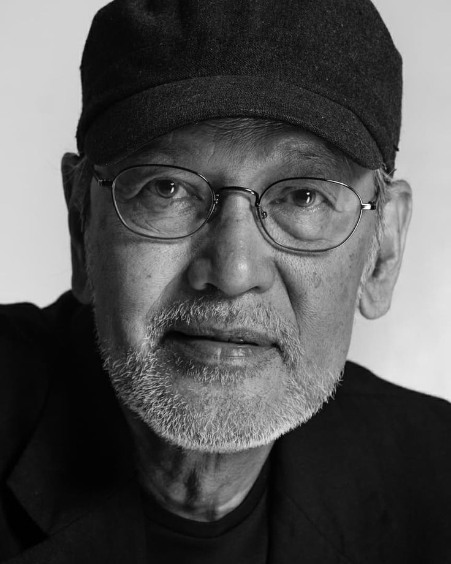
Born April 10, 1942
Malabon, Philippines
Sabel,1966
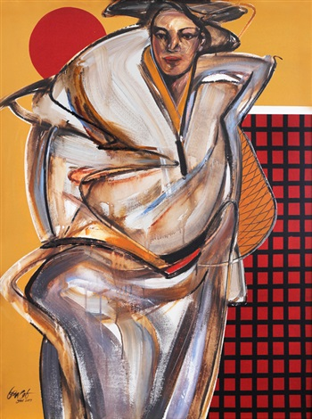
Oil on Canvas
100 x 80 cm
Sabel is a series of women draped in white or colored fabrics. This raises the question: who is this Sabel? What is her status? Where does she come from? What is this outfit of choices? The poverty rate in the Philippines based on the statistics back in 2025 is about 9.7%. Cities, villages, and towns that contain a poor status have to make due on what supplies they are given or found. The woman in this painting can be one of poverty but despite the lack of money her facial expression doesn’t seem to deteriorate as if she is fine just how she looks and lives.
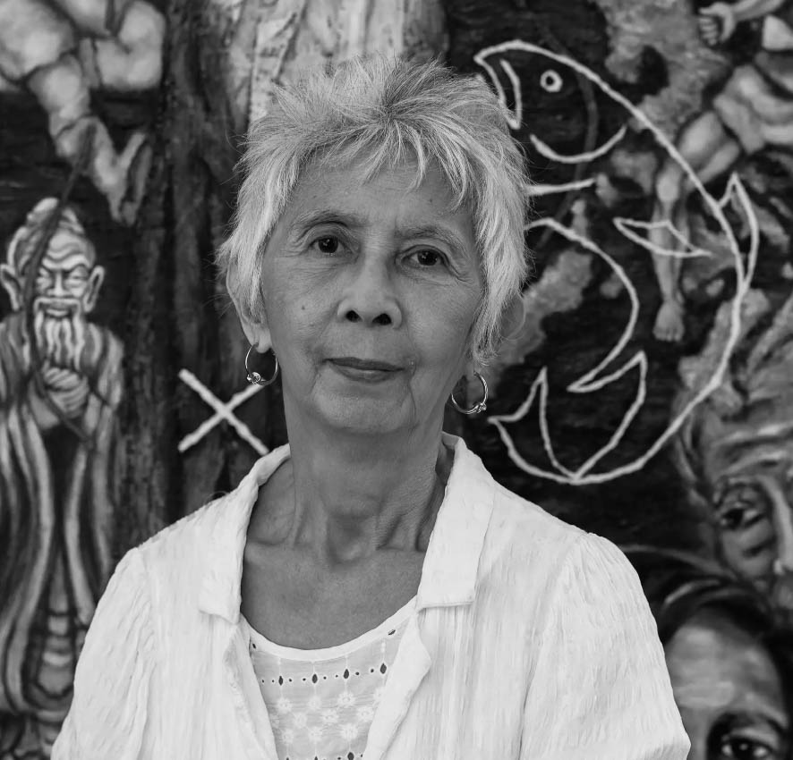
Born November 21, 1949
San Juan, Rizal
Tutol ni Dolorosa
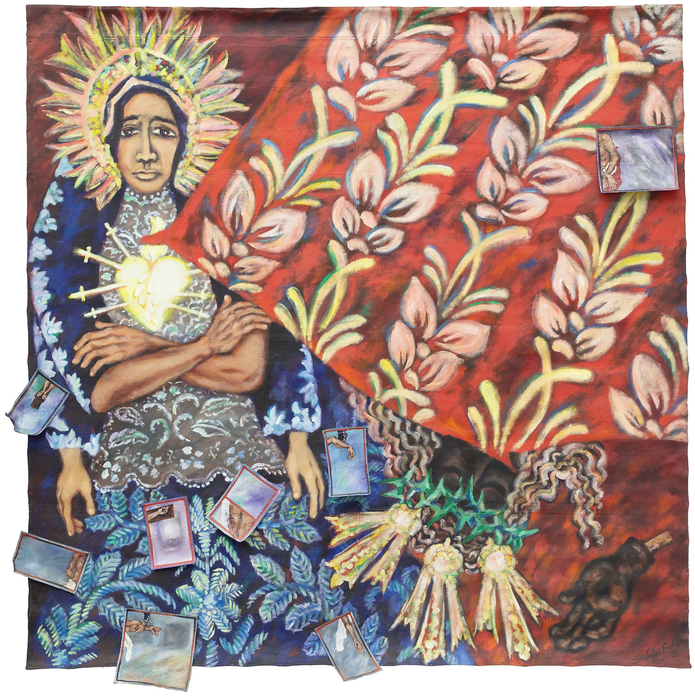
Acrylic on canvas
199.5 x 201.5 cm
The word “tutol” means to object or protest, so the title itself becomes a statement of resistance. The translation of this piece is “The Protest of Dolorosa” and shows a woman draped in an attire resembling the Virgin Mary. Catholicism has always been a big part of Filipino culture dating back from the Spaniard colonization. However, there is a strong root of heritage that resides from this painting which looks like the Philippine flags of blue, red, and the sun shaped on Dolorosa’s head.
Born June 3, 1931 to May 11, 1995
Manila, Philippines
Susurro del Mar, 1961
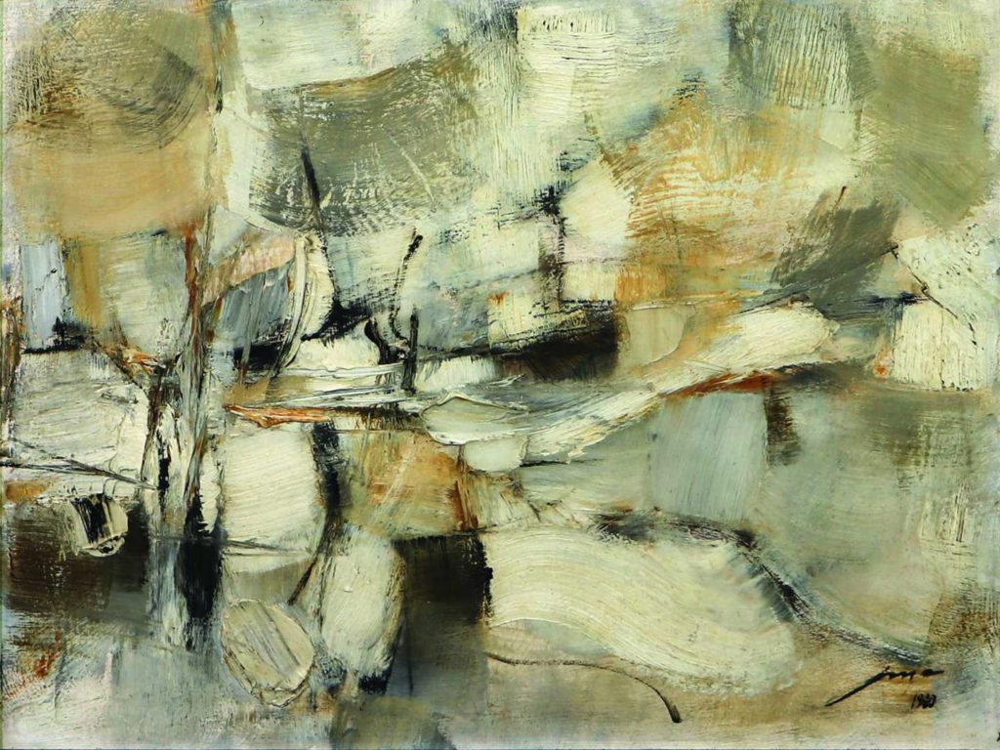
Oil on Wood
5.72 × 60.96 cm
His style is a rustic cubism inspired painting with the title meaning “Whisper of the Sea”. The inspiration came to Joya from his scholarship and traveling in Madrid and other places in Spain. The combination of western abstract and distinct tropical essence of Filipino nature through the color aesthetic and boats arriving.
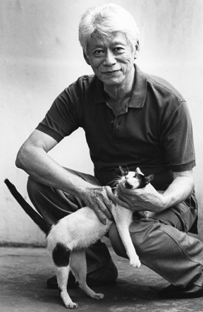
March 1, 1931 to May 9, 2005
Born in Davao City, Philippines
Second Station: Jesus Carries His Cross, 1996
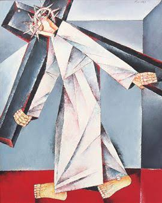
Oil on Canvas
114.3 × 91.44 cm
The image of Christ carrying the cross is central to Catholic visual culture, particularly in a country where Catholicism has become deeply connected to national and personal identity. However, I also see the image as representing broader experiences of burden, endurance, sacrifice, and injustice. What made me fond of this art work is the representation of Jesus carrying the cross and the artstyle choice. We don't see Jesus' face at all, yet can feel the anguish in which is being transpired in the painting.
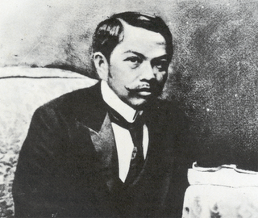
Born October 25, 1857 to December 7, 1899
Spoliarium, 1884
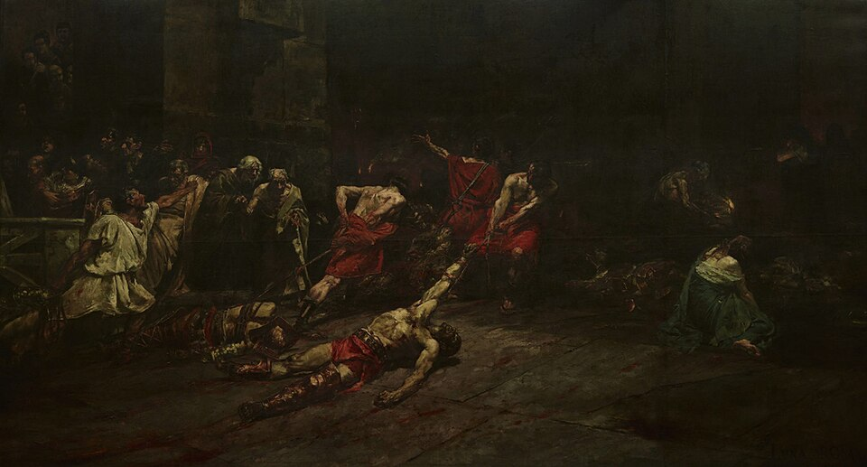
Oil on Canvas
13.8 ft × 25.18 ft
The heavy and intense oil painting of the Spoliarium represents the conflict history and domination of colonization of the Spaniards reigning down their influence over the Philippines. The light cascading down only to the center as to show the gruesome outcome of the fallen gladiators for mere entertainment. They are dragged away further into the dark background when one can notice it is a pile of corpses. This represents the political tensions of its time while it expresses universal feelings of oppression.
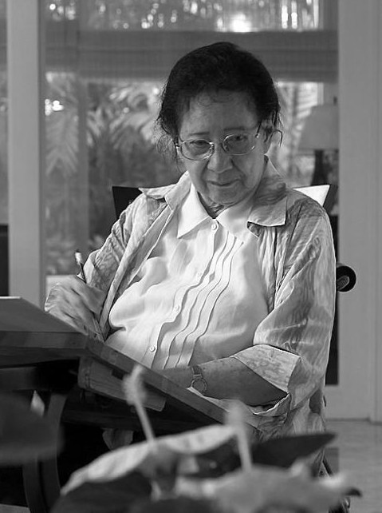
Born May 25, 1914 to May 5, 2012
Born in Manila, Philippines
Women Amidst Bananas, 1979
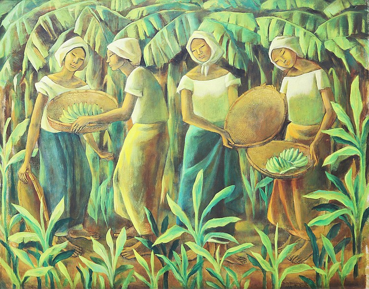
Oil on Canvas
37.8 x 48.03in
Through the vibrant green of agriculture to the four women dressed in white shirt, white headpiece, and blue or orange skirt, these women are working in picking up either crops or possibly bananas. The simplicity of colors that was chosen suits well for the environment and represents the work life in the Philippines. How labor is often overlooked when it comes to women, how they are always expected to do any type of work from traditional housework to agriculture.